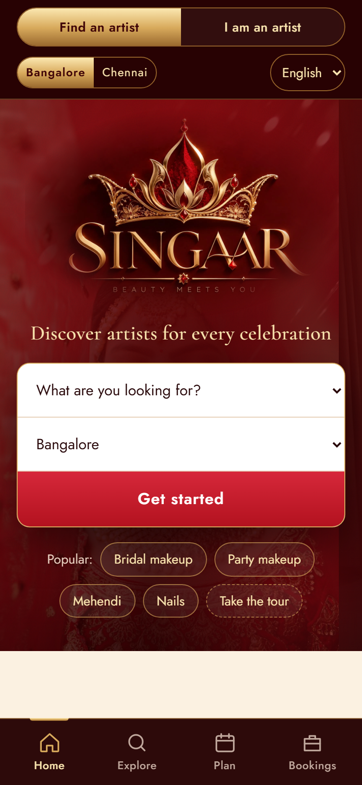
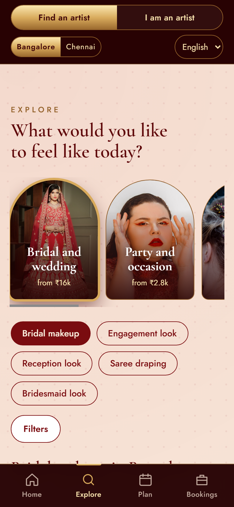
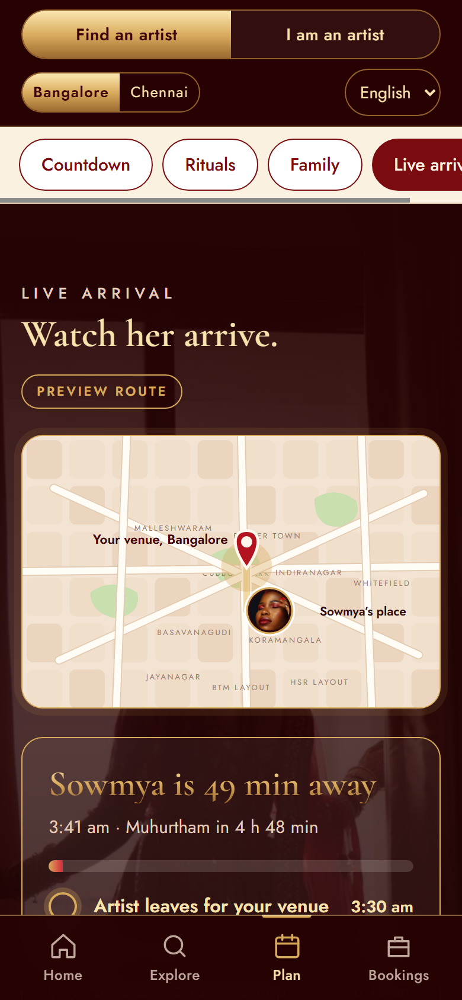

Project documentation
A marketplace for independent women artists and trusted salons, and the brides and families who book them. Bangalore first, Chennai next.
Live product (open on a phone): https://singaar.vercel.app/
Code: https://github.com/preethicrown/singaar
Built by: Preethi S | Mesa School of Business, ForgeX hackathon
Stage: working prototype with sample data. Artists, prices, reviews, payments and replies are simulated and labelled as such on the site.
SINGAAR is a marketplace where independent women artists and small salons list their services and prices, and customers (brides, bridesmaids and families) find, compare and book them. It covers weddings and the muhurtham, parties, hair, skin, nails, mehendi and accessories.
It is a marketplace, not a company with its own staff. It connects customers with artists and holds no inventory. The name means adornment, the act of getting ready. The brand idea is rituals: the sindoor, the mehendi evening, the nikah, the moment before the muhurtham.



Small salons and independent women artists in Bangalore and Chennai lose bookings and regular customers because there is no simple way to be found, compared and booked. Today it runs on Instagram messages, WhatsApp haggling and phone calls.
| Who | What goes wrong today |
|---|---|
| Brides and families | They cannot judge a fair price, so a lower price can look like lower quality. They cannot be sure the artist will arrive on time on the wedding morning. They compare by scrolling Instagram and asking relatives. |
| Independent artists and small salons | No way to be discovered beyond word of mouth. Dates are tracked in notebooks and chats. They lose bridal bookings to big parlours with bigger marketing. |
This came from home. My mother has run a beauty parlour for about fifteen years. Her customers only phone her, and she loses bridal bookings to big parlours.
Conversations and videos with salon owners and artists, and my mother's own experience of how customers book.
Full write-up in the repository (docs/research).
| Feedback | What we did |
|---|---|
| The home screen was confusing and full of text. | Home is now the logo, one search bar and two clear spaces. Text-heavy sections became photos, icons and short labels. Details sit behind one tap. |
| Adoption by artists may be the real problem. | A separate artist space with its own sign-in, request cards with Accept and Decline, a calendar, prices and earnings. |
| Customers use calls and WhatsApp, not apps. | WhatsApp links on profiles and bookings, plus an in-app booking chat. |
| It should feel like Zomato or Rapido: one tap, then live tracking. | After a booking is confirmed, "Track arrival" shows the artist moving on a map, with an ETA. |
| We need a business model. | Proposed 10% commission plus a small monthly platform fee (section 9). |
| User | Goal | What SINGAAR gives |
|---|---|---|
| Bride | The right look, a fair price, a reliable artist on the day | Photos, a price guide for the city, availability on her date, live arrival |
| Bridesmaids, mother, sister | One artist who can cover the whole party | Bridal party planner that finds artists covering the most people |
| Family deciding together | Shortlist and vote | Save artists, compare up to three, send the shortlist to the family WhatsApp group |
| Independent artist | More bookings, her own prices, her own dates | Request cards, calendar, price editor, earnings |
| Small salon owner | To be found by brides who only see big parlours | A profile with her work and prices, in the same search as everyone |
| Step | Customer sees | Artist sees | System state |
|---|---|---|---|
| 1 | Sends a request for a service and date | A new request card with a date chip | requested |
| 2 | "Waiting for her reply" | Accept or Decline | requested |
| 3 | "Confirmed", chat opens, pay advance | Date blocked in her calendar and in search | confirmed |
| 4 | Advance paid (test), date locked | "Advance received" | confirmed, paid |
| 5 | Track arrival: map, ETA, timeline | Mark completed after the service | confirmed |
| 6 | Leaves a review | Earnings updated, commission calculated | completed |
Other states: declined and cancelled. In the demo, a sample artist confirms by herself after about 35 seconds so a presenter can show the whole flow; a real artist taps Accept.
| Layer | What we used | Status |
|---|---|---|
| Frontend | HTML, CSS and JavaScript (no framework), built as a phone-style app: bottom tab bar, a customer space and an artist space, hash routing | Live |
| Install on phone | Progressive Web App: manifest, service worker, icons ("Add to Home Screen"), works on weak signal | Live |
| Hosting | Vercel (the live link) and GitHub Pages, both deployed automatically from the GitHub repository on every change | Live |
| Data (prototype) | Browser storage on the user's own device. No server, no personal data collected | Live |
| Maps and tracking | Hand-built SVG map with a moving marker, no map vendor, no location data collected | Live |
| Messaging | WhatsApp click-to-chat links (wa.me) and an in-app booking chat | Live |
AI app (web/) | Next.js, TypeScript, Anthropic Claude API (search understanding, reply drafting, price check) | Built, class app |
| Database and accounts | Supabase (Postgres), real artist sign-in with phone verification | Planned |
| Payments | Razorpay, test mode first (needs KYC) | Planned |
| Automatic messages | WhatsApp Business API; Instagram portfolios via Meta approval | Planned |
| Record | Key fields |
|---|---|
| Artist or salon | name, area, city, type (artist or salon), travels to the customer or not, services with prices, styles, bio, WhatsApp, Instagram, booked dates |
| Booking | artist, service, date, venue, customer first name, note, price, status, paid, reply, chat messages |
| Review | booking, artist, rating, short text (only after a completed booking) |
| Calendar block | artist, date |
The prototype was designed, coded, tested and revised with Claude Code (Anthropic's AI coding assistant), working from my brand, research and mentor feedback. I directed the product, made every decision about what stays and what goes, and rejected redesigns I did not like. Each change was tested in a real browser at phone and desktop sizes, with automated checks of every journey before it went live.
The class web app (web/ folder) uses the Claude API for two jobs:
Everything else is plain code: filtering, budget, date checks and ranking. A price check blocks any drafted message that contains a rupee amount that is not on the artist's own price list, so the AI cannot invent a price.
Photos are free stock photography (Pexels), labelled "illustrative". They are not the sample artists, and are replaced by artists' own work at launch.
We want to be far cheaper than the big platforms, so artists keep most of what they earn. Pricing is proposed and will be finalised together with the first artists.
| Revenue line | How it works |
|---|---|
| Commission | 10% of each completed booking. If she is not paid, we earn nothing. |
| Platform fee | ₹299 a month for the profile, calendar, bookings and tracking. Free for the first 3 months. |
| An artist with | Earns a month | SINGAAR takes | She keeps |
|---|---|---|---|
| 4 bookings of ₹15,000 | ₹60,000 | ₹6,000 + ₹299 = ₹6,299 | ₹53,701 |
| 2 bookings of ₹8,000 | ₹16,000 | ₹1,600 + ₹299 = ₹1,899 | ₹14,101 |
Possible later revenue to test, not built: featured placement for salons, and premium wedding packages. We will not add them until the core marketplace works.
| Works in the prototype | Demo only (labelled on the site) |
|---|---|
| Search, filters, compare, profiles with galleries, price guide, quiz, booking requests, artist sign-in, accept and decline, calendar blocking, price editing, earnings and commission, reviews, booking chat, wedding countdown with calendar reminders, ritual planner, bridal party planner, live arrival tracker for home visits, salon visits and the muhurtham, WhatsApp links, language switcher, guided tour, installable phone app | All artist profiles, prices, reviews, history and availability are sample data. The artist's automatic confirmation, chat replies, advance payment and live arrival are simulated: no money moves and no messages are sent. The artist sign-in has no password. Bookings are saved only in the visitor's own browser, so they are not shared between devices. |
| Phase | What | Why |
|---|---|---|
| Now | Test with 5 to 10 customers and 5 to 10 artists. Can they understand it in five seconds? Would the artists really list themselves? | Adoption is the biggest risk |
| Next | Real backend on Supabase: accounts, a shared database, real artist sign-in with phone verification | So a booking made by a customer reaches a real artist |
| Then | Real payments with Razorpay (test mode first), automatic WhatsApp messages, Instagram portfolios | Money and trust |
| Then | Verified artists: portfolio checks and reviews only from completed bookings; real AI in the booking chat with the price check | The SINGAAR promise |
| Later | Native Android and iPhone app, then Chennai and more cities | Only after the backend exists |
| Risk | Why it matters | How we test it |
|---|---|---|
| Artist adoption | Will small artists list themselves and keep their calendar updated? | Onboard the first 10 artists by hand and watch whether they update dates and accept requests |
| Competition | WedMeGood and Fresha exist | Our edge is small independent women artists, every kind of look, fair price visibility and live arrival. Ask customers whether this matters to them |
| Trust and safety | Customers let an artist into their home or wedding day | Verification, trial looks, reviews from completed bookings only |
| Pricing | 10% plus ₹299 a month is untested | Show artists the earnings screen and ask which structure they prefer |
| Off-platform bookings | Customer and artist can move to WhatsApp and skip the fee | Make the platform worth staying on: advance protection, tracking, reviews, calendar |
Links: live product https://singaar.vercel.app/ | code https://github.com/preethicrown/singaar | research and scope documents are in the repository under docs/.